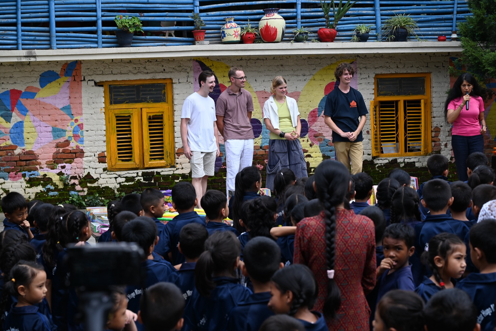
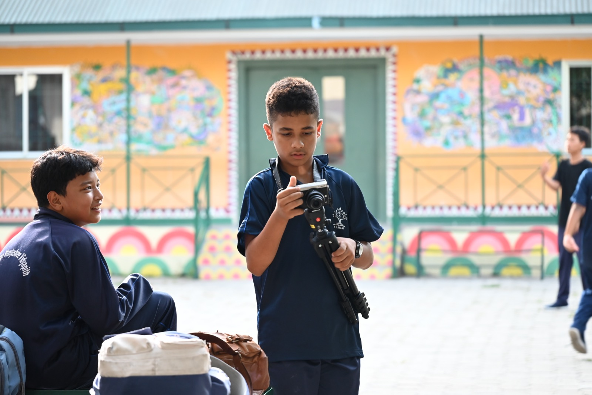
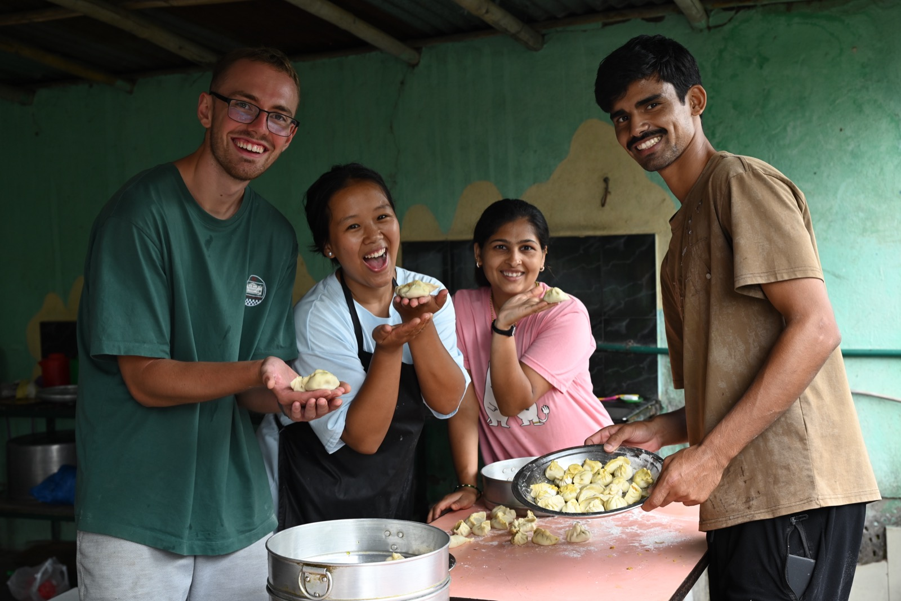

TEAMNEPAL · SOLIDARITÉ & CRÉATION NUMÉRIQUE TEAMNEPAL · SOLIDARITY & DIGITAL STORYTELLING
Regards Croisés à Chapali Shared Perspectives in Chapali
Une mission de 38 jours à l'école Victor Hugo Manjushree Vidyapith (Népal) : co-création de courts-métrages avec les élèves, initiation à la vidéo et soutien concret aux infrastructures de l'école. A 38-day field mission at Victor Hugo Manjushree Vidyapith school (Nepal): co-creating student short films, hands-on video workshops, and practical infrastructure support.
Film Documentaire (En cours de réalisation) Mission Documentary Film (In Production)
Retraçant l'intégralité des 38 jours d'aventure humaine et de création partagée avec les enfants de Chapali, ce documentaire est actuellement en cours de montage et de mixage. Il sera présenté lors de ma soutenance en janvier 2027. Covering all 38 days of human connection and filmmaking with the students in Chapali, this documentary is currently in editing and sound post-production. It will be screened during my defense in January 2027.
Les Productions Vidéo Réalisées sur Place Video Productions Created on Site
Deux courts-métrages de fiction écrits et joués par les élèves de la classe 9, complétés par les reportages patrimoine de la classe 10 : Two fiction short films written and acted by grade 9 students, alongside cultural heritage reports by grade 10:
Anup & Unik
Court-métrage fiction (Classe 9) abordant les préjugés et discriminations de castes, imaginé et interprété en autonomie par les élèves. Fiction short film (Grade 9) tackling caste prejudice, entirely written and performed by the students.
Ouvrir sur YouTube ↗ Watch on YouTube ↗Yakub & Kusum
Court-métrage fiction (Classe 9) centré sur l'égalité des genres et l'accès à l'éducation pour les jeunes filles. Fiction short film (Grade 9) addressing gender equality and educational opportunities for girls.
Ouvrir sur YouTube ↗ Watch on YouTube ↗Visites & PatrimoineVisits & Heritage
Capsules vidéo sur le village de Chapali et les temples de la vallée de Katmandou (Budhanilkantha, Gamcha) pour valoriser la mémoire locale. Video chronicles of Chapali village and temples across the Kathmandu valley (Budhanilkantha, Gamcha) celebrating local heritage.
Ouvrir sur YouTube (à 1:49) ↗ Watch on YouTube (at 1:49) ↗Genèse & Financement Genesis & Funding
Avec trois camarades de l'ENSEEIHT (Robinson, Olympe et Paul), nous avons créé l'association TEAMNEPAL pour monter un projet utile et durable à l'international. Nous avons réuni un budget de 9 300 € grâce au soutien déterminant du FONJEP, de N7DEV (fonds de dotation de l'école) et des Alumnis. Together with three ENSEEIHT classmates (Robinson, Olympe, and Paul), we founded TEAMNEPAL to build a sustainable cross-cultural initiative. We secured a budget of 9,300 € backed by FONJEP, N7DEV (school endowment fund), and Alumni.
Notre partenaire : l'école Victor Hugo Manjushree Vidyapith (VHMaVi), fondée à Chapali pour offrir un enseignement gratuit et exigeant à 260 enfants défavorisés, dont 42 internes. Our partner: Victor Hugo Manjushree Vidyapith (VHMaVi) in Chapali, providing free quality education to 260 underprivileged students, including 42 boarders.

Ateliers Pratiques & Adaptation Hands-on Workshops & Adaptation
Pendant 38 jours à Chapali, nous avons co-animé les ateliers avec un quatuor népalais formidable (Pushpa, Dinesh, Sajjal et Rajesh), indispensable pour dépasser la barrière de la langue, encourager les élèves plus timides et gérer les repérages. Avec la classe 9, les élèves ont pris en charge tous les postes : écriture de scénarios ODD (préjugés de castes, égalité filles/garçons), cadrage, prise de son aux micros Tascam, jeu d'acteur et montage assisté. En parallèle, la classe 10 a réalisé des reportages sur les temples de Gamcha et Budhanilkantha pour valoriser leur patrimoine local, dans un pays où 3 000 jeunes s'expatrient chaque jour. During 38 days in Chapali, we co-led workshops with an outstanding Nepali volunteer team (Pushpa, Dinesh, Sajjal, Rajesh), crucial for bridging language barriers, mentoring shy students, and scouting locations. Grade 9 students took full ownership: writing SDG scripts (caste prejudice, gender equality), camera operating, Tascam sound recording, acting, and assisted editing. Meanwhile, grade 10 filmed documentaries on Gamcha and Budhanilkantha temples, celebrating local heritage in a country where 3,000 young people emigrate every day.
Sur le terrain, nous avons adapté notre action aux réalités locales : en concertation avec la directrice Saru et l'équipe éducative, le budget initialement prévu pour du matériel sportif a été réorienté vers des investissements durables — le co-financement de la bibliothèque de l'internat et la rénovation du sol du gymnase. De même, la météo de mousson ayant empêché les olympiades sportives extérieures, nous les avons transformées en une grande fête dansante finale réunissant toute l'école lors de la projection. Au quotidien, logés chez Saru, nous avons partagé la vie de l'internat : aide aux devoirs, matchs de futsal et de basket avec Sajjal, et atelier de préparation de momos avant le départ. On the ground, we adapted to local realities: in agreement with director Saru and the teachers, funds originally budgeted for sports gear were reallocated to lasting infrastructure — co-funding the boarding school library and renovating the gym floor. Similarly, when monsoon rains prevented outdoor sports competitions, we pivoted to a school-wide dance celebration during the final film screening. Hosted at Saru's home, daily life centered on the boarding house: evening tutoring, futsal and basketball with Sajjal, and making momos together before departing.

Une Passerelle Durable pour l'École A Lasting Bridge for ENSEEIHT
Le projet ne s'arrête pas à ce premier voyage : la reconduction du partenariat pour l'été 2027 a déjà été confirmée par l'école VHMaVi. TEAMNEPAL a été pensée comme une passerelle pérenne pour que d'autres promotions d'ingénieurs de l'ENSEEIHT puissent reprendre le flambeau chaque été. This partnership is built for the long run: renewal for summer 2027 has already been confirmed by VHMaVi. TEAMNEPAL was created as an enduring platform so future ENSEEIHT engineering students can continue the mission each summer.
